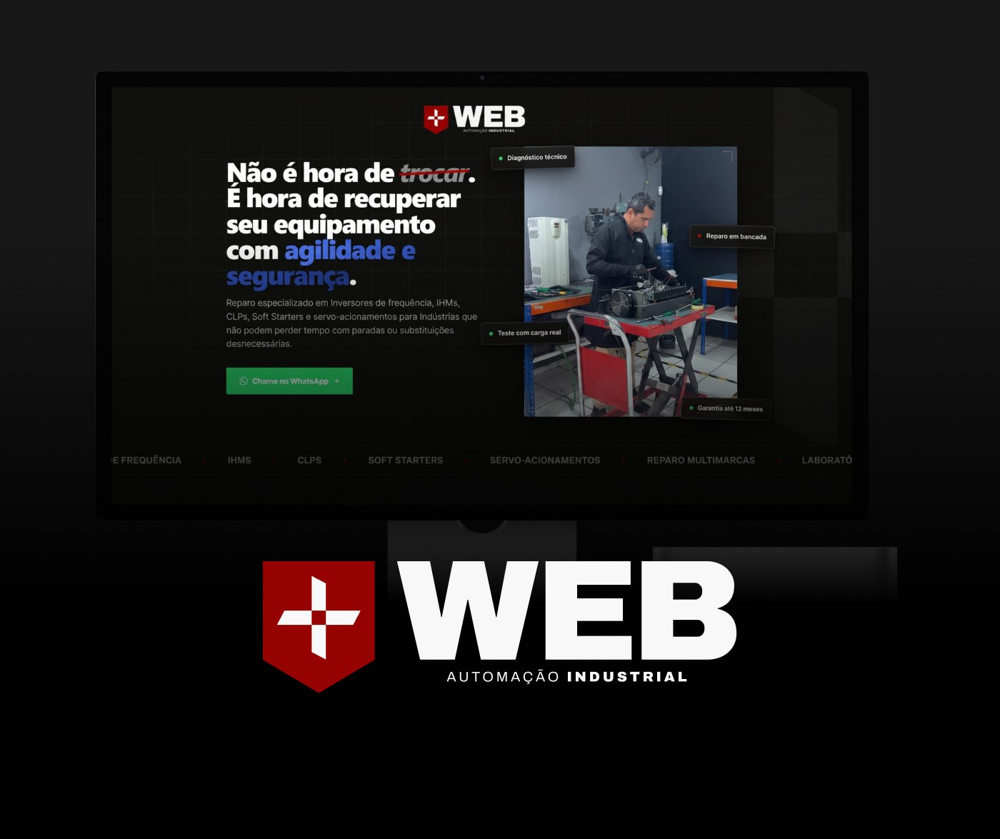
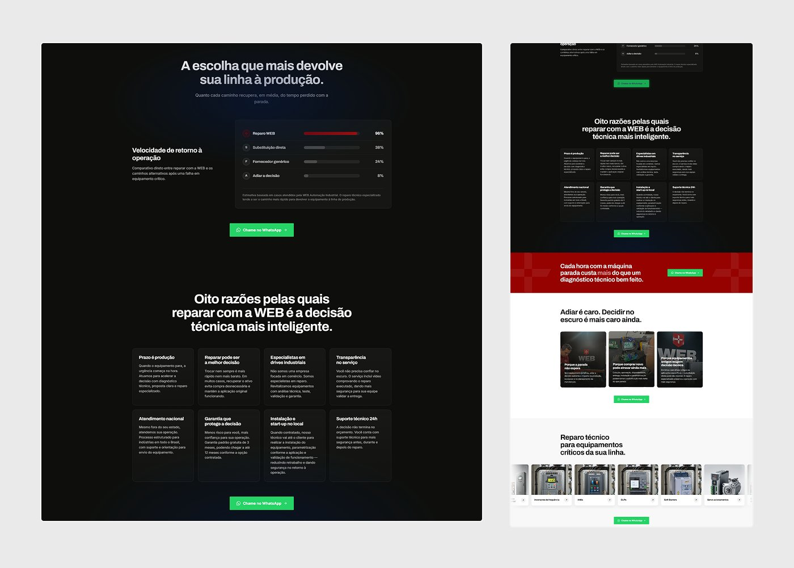
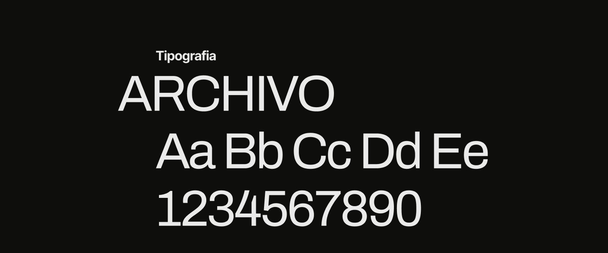
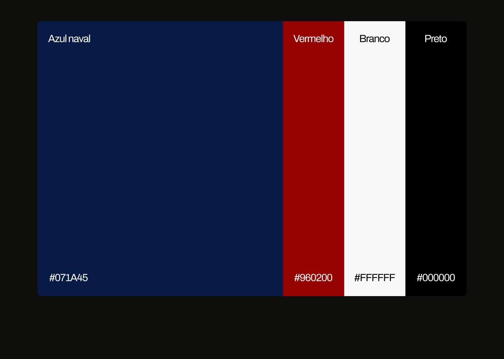
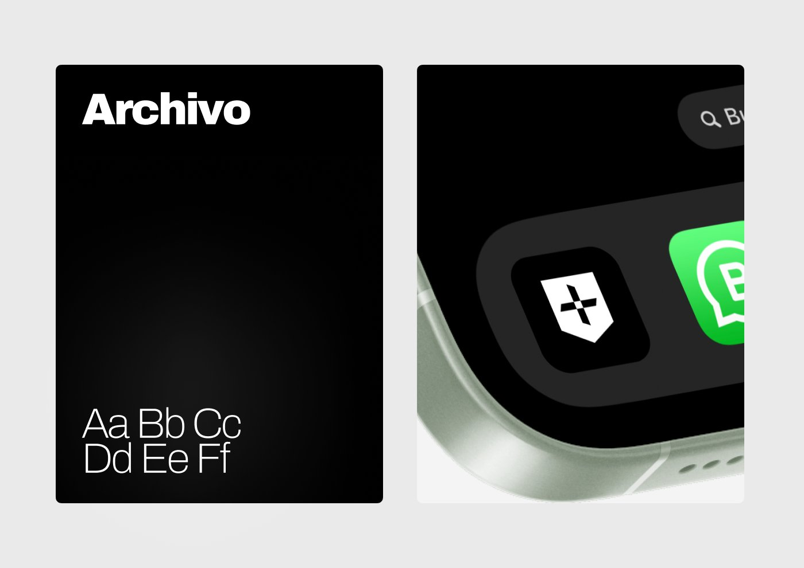
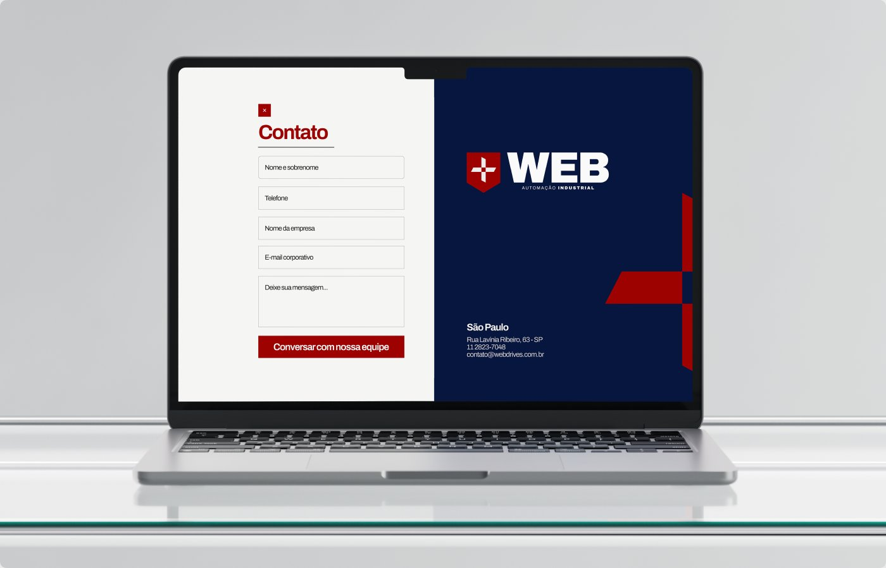
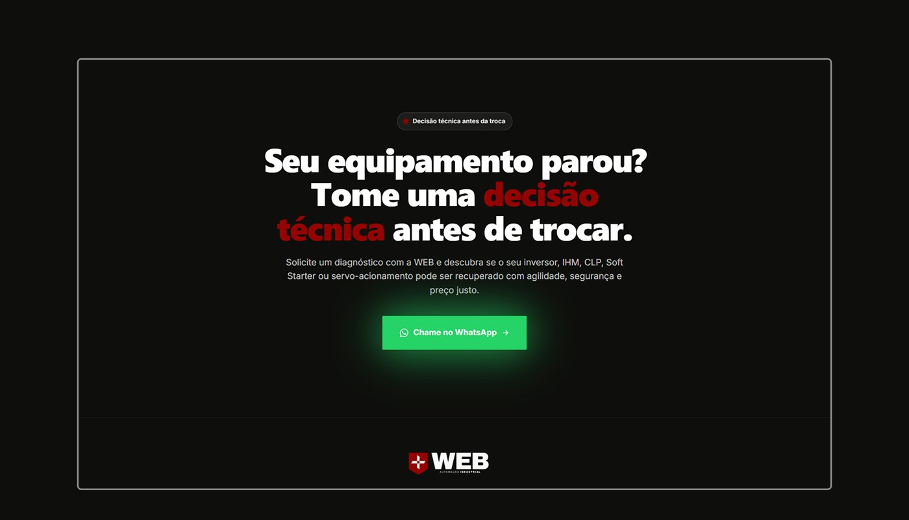
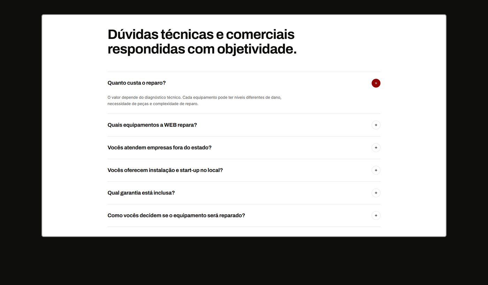
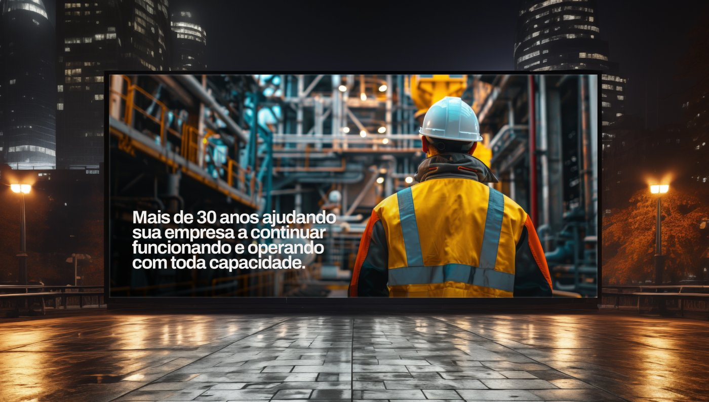

Website WEB Automação Industrial
A WEB Automação Industrial é uma assistência técnica especializada no reparo de drives industriais. Com mais de 30 anos de mercado, a empresa construiu uma forte reputação no setor e se tornou referência em sua área de atuação.
O projeto nasceu da necessidade de transformar essa autoridade offline em uma presença digital preparada para aquisição de novos clientes.
O objetivo principal era criar uma landing page específica para campanhas de tráfego, com uma jornada simples e direta até a conversão.
Mais do que apresentar a empresa, a página precisava funcionar como uma ferramenta de aquisição: captar a atenção, comunicar a solução e levar o usuário ao contato.
Além do design, também era necessário garantir que cada conversão pudesse ser mensurada e integrada ao processo comercial da empresa.
- Estruturação da landing page com foco em conversão;
- Desenvolvimento do design utilizando IA;
- Implementação da página com Claude Code;
- Criação do fluxo de conversão;
- Integração da conversão via API com o CRM da empresa;
- Estruturação da mensuração dos leads gerados pelas campanhas.
O resultado foi uma landing page conectada não apenas ao marketing, mas também à operação comercial, permitindo transformar o tráfego em leads mensuráveis dentro do CRM.








